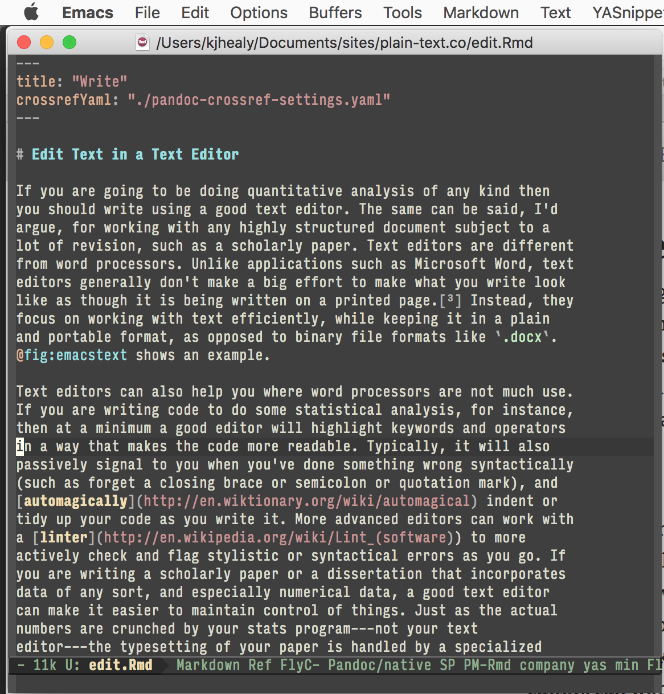
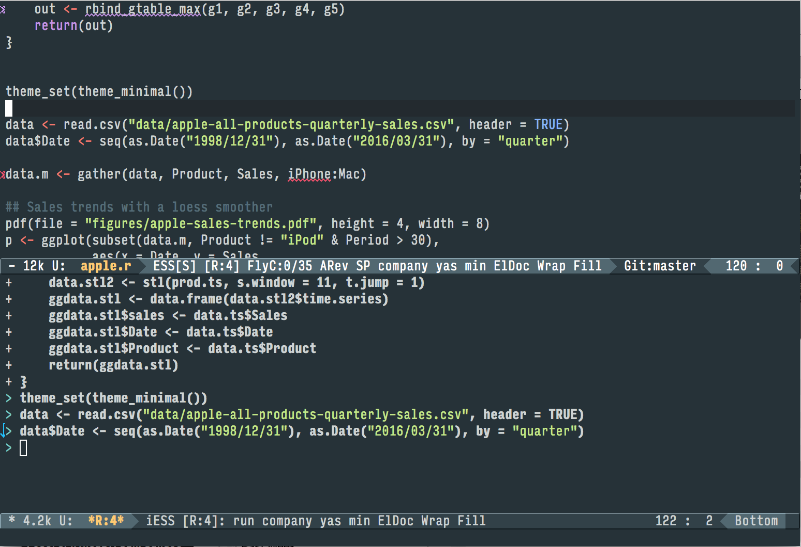

If you are going to be doing quantitative analysis of any kind then
you should write using a good text editor. The same can be said, I’d
argue, for working with any highly structured document subject to a
lot of revision, such as a scholarly paper. Text editors are different
from word processors. Unlike applications such as Microsoft Word, text
editors generally don’t make a big effort to make what you write look
like as though it is being written on a printed page.1 For further argument about the advantages of text-editors over
word processors see Allin Cottrell’s polemic, “Word Processors:
Stupid and Inefficient”. Instead, they
focus on working with text efficiently, while keeping it in a plain
and portable format, as opposed to binary file formats like .docx. Figure 2.1 shows an example.
Text editors can also help you where word processors are not much use. If you are writing code to do some statistical analysis, for instance, then at a minimum a good editor will highlight keywords and operators in a way that makes the code more readable. Typically, it will also passively signal to you when you’ve done something wrong syntactically (such as forget a closing brace or semicolon or quotation mark), and automagically indent or tidy up your code as you write it. More advanced editors can work with a linter to more actively check and flag stylistic or syntactical errors as you go. If you are writing a scholarly paper or a dissertation that incorporates data of any sort, and especially numerical data, a good text editor can make it easier to maintain control of things. Just as the actual numbers are crunched by your stats program—not your text editor—the typesetting of your paper is handled by a specialized application, too. That tool should automatically take care of things like entries in your bibliography, the labelling of tables and figures, and cross-references and other paraphernalia. The best editors can closely integrate with the tools you use to do the various pieces of your work.
Mynd 2.1: Working on part of this document in Emacs.
Emacs is a text editor, in the same way the blue whale is a mammal. It does the things I have just described, and rather more besides, if you want it to. Combining Emacs with some other applications and add-ons allows you to manage writing and data-analysis effectively. If it seems odd to do a bunch of different tasks inside an editor, the blogger Rekado makes a useful analogy to the way people use web browsers:
Just like a browser is used by many as a platform for running applications operating on some HTML document, Emacs is a platform for anything that can “reasonably” (this is up for interpretation) be mapped to buffers of text. Applications in browsers are written in JavaScript, applications in Emacs are written in EmacsLisp (also called “elisp”). … If you have used your web browser (or have observed someone use their web browser) to play games, listen to music, watch videos, read and compose email, edit text (e.g. by contributing to the Wikipedia), chat with friends (or chat about foes), read documentation, installed an extension—well, then the notion of a generic tool as a platform should not be a foreign concept to you. Emacs can be understood as such a generic tool providing a text interface (one of which may be a file editor).
While very powerful and flexible, Emacs can be annoying. Indeed, to many people encountering it for the first time—especially those used to standard applications on Windows or Mac OS—its conventions seem bizarre and byzantine. As applications go, Emacs is quite ancient. The first version was written by Richard Stallman in the 1970s. Because it evolved in a much earlier era of computing (before the development of decent graphical displays, for instance, and window managers, and possibly also fire), it doesn’t share many of the conventions of modern applications. Like most powerful text editors, Emacs offers many opportunities to waste your time learning its particular conventions, tweaking its settings, and generally customizing it. There are several good alternatives on each major platform.
Given all that, why mention it in the first place? Partly because it’s the editor I use. Partly because it is available for all of the main desktop and laptop computing plaforms. And partly because it is very, very good at doing what I want it to do. There are many good reasons to use something like TextMate, or Sublime Text instead of Emacs. Similarly, when doing data analysis with R, you may just want to use the RStudio environment. You will do fine if you go with these alternatives.
When you write papers in plain text, how do you manage the formatting, sectioning, and other related aspects of your document? Markdown is a loosely-standardized way of writing plain text that includes information about the formatting of your document. It was originally developed by John Gruber, with input from Aaron Swartz. The aim was to make a simple format that could incorporate structural information about the document (such as headings and subheadings, emphasis, hyperlinks, lists, footnotes, and so on), with minimal loss of readability. Formats like HTML or TeX are much more extensive markup languages, but Markdown was meant to be simple. Over the years it has become a de facto standard. Text editors and note-taking applications support it, and tools exist to convert Markdown not just into HTML (its original target output format) but many other document types as well. lst:markdown shows the markdown source for part of this document.
# Use Markdown
When you write papers in plain text, how do you manage the formatting,
sectioning, and other related aspects of your document?
[Markdown](http://en.wikipedia.org/wiki/Markdown) is a
loosely-standardized way. It was originally developed by John Gruber,
with input from Aaron Swartz. The aim was to make a simple format
that could incorporate structural information about the document
(such as headings and subheadings, *emphasis*,
[hyperlinks](http://daringfireball.net/markdown), lists, footnotes,
and so on), with minimal loss of readability. Formats like HTML or TeX
are much more extensive markup languages, but Markdown was meant to be
simple. Over the years it has become a *de facto* standard. Text
editors and note-taking applications support it, and tools exist to
convert Markdown not just into HTML (its original target output
format) but many other document types as well. lst:markdown-example shows
the markdown source for this paragraph and its subheading.The excerpt shown in lst:markdown shows a few of the most common
Markdown conventions, most notably how it represents headings and
subheadings (a # symbol for a top-level header, with ## for the
next level down, and so on), how it represents hyperlinks, and how it
emphasizes text. Once your text is marked up in in this format, you
need a bit of software to get from there to a properly readable HTML,
PDF, or Word file. This is what pandoc is for—more on that later on.
There are a number of Markdown variants, or “flavors”, that have extended it to manage things like cross-references and labels, citations, and other textual elements. I recommend using Pandoc’s markdown, which can handle all of these. This means you can use Markdown to write in plain text, while not having to worry whether your reference list is complete, or whether cross-references (to ‘Figure 3’ for example) remain correct after you move things around in your text.
You will probably be doing some—perhaps a great deal—of quantitative data analysis. R is an environment for statistical computing. It’s well-supported, continually improving, and has a very active expert-user community. The documentation that comes with the software is complete, if somewhat terse, but there are a large number of excellent reference and teaching texts that illustrate its use. These include dalgaard08introdstatisr, venables02moderappliedstatissplus, maindonald03dataanalygraphusingr, fox02rspluscompanappliedregres, harrell16regresmodelstrat, matloff11artrprogr, and gelmanhill07:dataanalysis. Although it is a command-line tool at its core, it can easily be used in conjunction with the RStudio IDE. You can download R from The R Project Homepage.
R can be used directly within Emacs by way of a package called ESS (for “Emacs Speaks Statistics”). As shown in Figure 2.2, it allows you to work with your code in one Emacs frame and a live R session in another right beside it. Because everything is inside Emacs, it is easy to do things like send a chunk of your code over to R using a keystroke. This is a very efficient way of doing interactive data analysis while building up code you can use again in future.
Mynd 2.2: Working with R in Emacs using ESS. A document containing R code is open in the top half of the screen. Below the divider, an R session is running, also inside Emacs. Code from the top pane is sent to the bottom with a keyboard shortcut, where it is evaluated by R. We can also jump down to the bottom pane and do work there. Small details like a lint checker, active line highlighting, and revision-control information are also visible.
You’ll present your results in papers, but also in talks where you will likely use some kind of presentation software. You can use Microsoft PowerPoint or Apple’s Keynote. Or, you can produce HTML or PDF slides directly from plain text documents.2 The actual business of giving talks based on your work is beyond the scope of this discussion. Suffice to say that there is plenty of good advice available via Google, and you should pay attention to it.